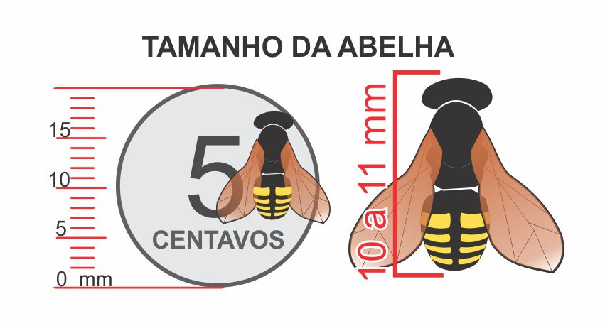
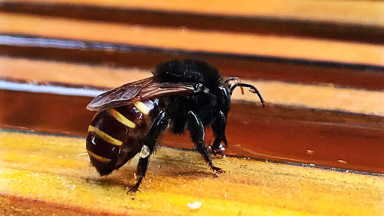

Características Gerais
Sem Ferrão: Diferente das abelhas comuns, as mandaçaias não possuem ferrão, o que as torna menos agressivas.
Tamanho: Geralmente, elas têm tamanho médio, variando de 8 a 15 mm.
Corpo: O corpo é geralmente escuro, com pelagem pubescente que pode variar em tonalidades, dependendo da espécie.

Colmeias: Construem colmeias em cavidades de árvores, buracos em troncos ou estruturas artificiais, utilizando cera e resina para sua construção.
Organização Social: Vivem em colônias com uma rainha, operárias e machos, apresentando uma estrutura social bem definida.
Polinização: São polinizadoras eficazes, contribuindo para a fertilização de diversas plantas e a produção de frutas.

Mel de Alta Qualidade: O mel produzido é considerado de alta qualidade, com propriedades medicinais e sabor único.
Alimentação:Se alimentam de néctar e pólen, coletando recursos para sustentar a colônia.
Essas características fazem da mandaçaia uma espécie importante para os ecossistemas e a agricultura.